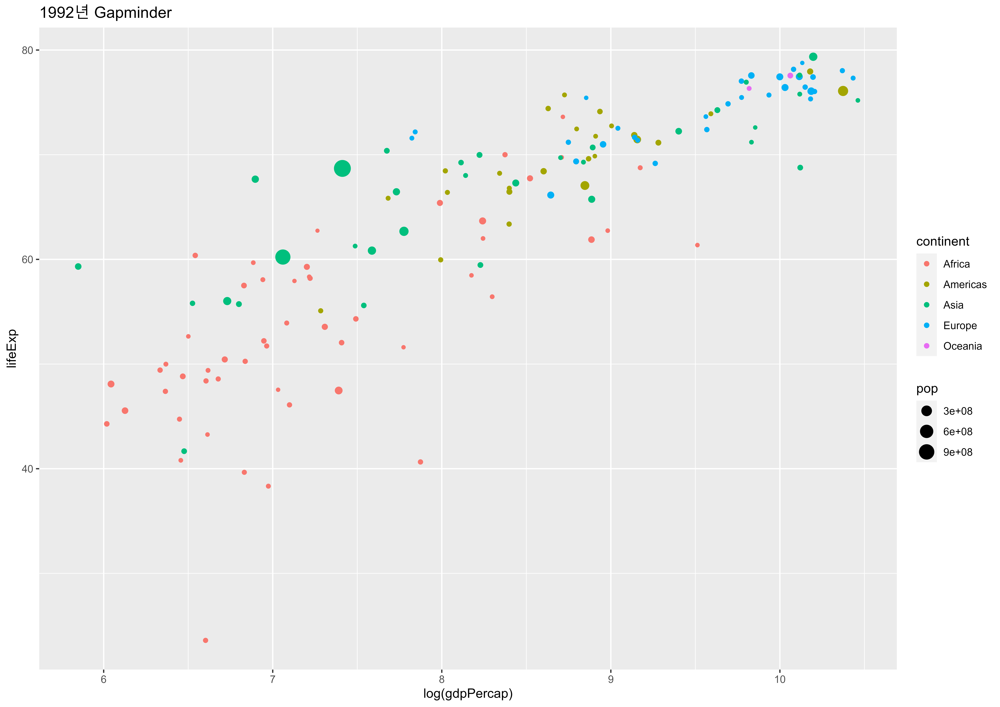

ggplot2의 마법
데이터프레임 소개
기본적으로 데이터프레임(data.frame)은 다음 특성을 갖는 표같은 형태를 갖추고 있다.

- 칼럼(column)은 각기 다른 자료형을 갖는다; 숫자(
numeric), 문자(character), 논리(boolean), 범주(factor). - 칼럼을 변수(variable)라고도 부른다.
- 행(row)은 단일 관측점에 대응된다.
- 특정 조건에 따라 부분집합(subset) 혹은 필터(filter) 작업을 수행할 수 있다.
데이터프레임의 개별 변수는 $ 연산자로 액세스할 수 있습니다. (예시: gap1992$pop). 그러나 우리는 이 방식을 거의 사용하지 않을 것입니다. tidyverse을 사용하면 이 연산자 없이 쉽게 변수를 액세스할 수 있기 때문입니다.
gap1992 데이터에 대해서 colnames()와 head()를 실행하여 각 컬럼의 데이터를 살펴봅니다. 그런 다음 nrow()를 사용하여 데이터 세트에 몇 개의 행(관측치)이 있는지 확인합니다. 답변을 제출하기 전에 콘솔에서 실행하세요.
gap1992 <- read.csv("data/gap1992.csv")
## gap1992 데이터프레임 살펴보기
## gap1992 칼럼명 살펴보기
## gap1992 행갯수 확인하기gap1992 <- read.csv("data/gap1992.csv")
## gap1992 데이터프레임 살펴보기
head(gap1992)
## gap1992 칼럼명 살펴보기
colnames(gap1992)
## gap1992 행갯수 확인하기
nrow(gap1992)힌트: gap1992 데이터세트의 변수 이름이 필요한 경우에는 head() 혹은 colnames() 혹은 nrow() 함수로 확인할 수 있습니다.
시각적 요소에 대한 고찰
이제 데이터 프레임에 대해 조금은 이해할 수 있습니다. 그러면 좀더 재미있는 영역으로, 데이터 프레임으로 그래프(플롯) 만들 수 있습니다. 먼저 플롯에 변수를 표현하는 방법에 대해서 생각해 볼 것입니다.

플롯을 그리기 위한 변수의 기하학적 매핑
통계 그래픽은 다음으로 구성됩니다.:
- 데이터(
data)의 변수를, - 심미적(
aes()thetic) 속성의, - 기하학적(
geom_etric) 객체에 매핑(mapping). - 역자 주)
- aesthetic 속성은 심미적 속성으로 번역되지만, 시각적으로 표현할 수 있는 속성들로 이해하세요. 앞으로 미적으로 표현합니다.
- geometric(기하학적)은 모양, 위치, 크기 등 공간에서의 도형의 성질을 의미합니다.
이것은 ggplot2 코드에서 다음처럼 번역됩니다.:
위의 예제 코드를 분리해 보겠습니다. ggplot2는 항상 ggplot() 함수의 호출로 시작합니다. 이 함수에는 다음과 같은 두 가지가 필요합니다.:
- 데이터(
data) - 이 사례에서는,gap1992. - 매핑(
mapping) -aes()함수를 이용한 미적 매핑.
변수를 미적 속성에 매핑하려면, 미적(aes()thetic) 매핑 함수인 aes() 함수를 사용해야 합니다. 이 예제에서는, x에 log(gdpPercap)를 y에 log(pop)를 매핑했습니다.
마지막으로는, geom_point() 함수로 플롯에 기하학적 요소를 중첩하여 시각화할 수 있습니다.
출력된 플롯을 기반으로, 아래 코드에서 적절한 변수를 x, y 미적 속성에 매핑하세요. 그리고 시각화 스크립트를 실행하세요. 답변을 제출하기 전에 콘솔에서 스크립트를 실행해 볼 수 있습니다.
library(ggplot2)
gap1992 <- read.csv("data/gap1992.csv")
ggplot(data = gap1992,
mapping = aes(
x = ____,
y = ____
)) +
geom_point()**힌트:** 그래프를 자세히 살펴보세요.
그리고 `gap1992` 데이터 세트의 변수 이름이 필요한 경우에는 `head()` 혹은 `colnames()` 함수로 확인할 수 있습니다.# 정답 ~~~~~
library(ggplot2)
gap1992 <- read.csv("data/gap1992.csv")
ggplot(data=gap1992,
mapping = aes(
x = log(gdpPercap),
y = lifeExp
)) +
geom_point()미적 매핑 더 알아보기
geom_point() 함수에는 연습문제보다 더 많은 미적 요소가 있습니다. 그리고 중요한 것은, ggplot2를 잘 다루기 위해서는 geom로 시작하는 함수들(이하 geom)의 미적 속성을 알아야한 다는 것입니다. geom에 매핑할 수 있는 미적 요소를 알고 싶을 경우에는 help(geom_point)처럼 help() 함수를 사용하세요.
geom_point() 함수에 매핑할 수 있는 미적 속성의 목록은 __도움말__을 참조하세요. 그리고 모든 미적 매핑을 살펴보세요.
점 대 선
ggplot2의 장점은 시각화 표현을 쉽게 바꿀 수 있다는 점입니다.
geom_point()를 geom_line()로 교체하여, x-y 좌표에서의 점들을 대신해서 선을 그릴 수 있습니다.
먼저 코드를 실행하여 점이 있는 플롯을 확인합니다. 그 다음에 geom_point()를 geom_line()으로 변경합니다. 무슨 일이 일어났나요? 데이터의 시각적 표현은 어떻게 변경되었습니까?
library(ggplot2)
gap1992 <- read.csv("data/gap1992.csv")
ggplot(gap1992, aes(x = log(gdpPercap), y = lifeExp, color=continent)) +
geom_point()library(ggplot2)
gap1992 <- read.csv("data/gap1992.csv")
ggplot(gap1992, aes(x = log(gdpPercap), y = lifeExp, color=continent)) +
geom_line()ggplot의 레이어인 기하학적 표현
우리는, 그리고 ggplot2는 그래프 표현을 단일 기하적 표현으로 제한하지 않습니다! 기하학적 표현(Geoms)을 그래프의 레이어(layers)로 생각할 수 있습니다. 따라서, + 심볼을 통해서 기본 ggplot() 구문에 기하학적인 표현을 추가할 수 있습니다.
geom_line()와 geom_point() 두 기하학적 표현을 다음 ggplot 코드에 추가합니다. 예상한대로 결과가 나타났습니까?
library(ggplot2)
gap1992 <- read.csv("data/gap1992.csv")
ggplot(gap1992, aes(x = log(gdpPercap), y = lifeExp, color=continent)) +
____ # <-- 코드 추가library(ggplot2)
gap1992 <- read.csv("data/gap1992.csv")
ggplot(gap1992, aes(x = log(gdpPercap), y = lifeExp, color=continent)) +
geom_line() + geom_point() # <-- 코드 추가ggplot2 빠른 리뷰
ggplot2 빠른 리뷰를 위해서 … 다음과 같이 예를 들어보겠습니다.
최종 과제: Gapminder 플롯의 재현
마지막 과제는 gap1992 데이터를 사용하여 아래 그래프를 완전히 다시 만드는 것입니다.
- 변수 이름을 기억해야 하는 경우는 콘솔에서
head(gap1992)또는colnames(gap1992)을 호출할 수 있습니다. - 변수를 올라른 미적 요소에 매핑하여, 위의 그래프를 다시 만듧니다. 답변을 제출하기 전에 콘솔에서 스크립트를 실행해 볼 수 있습니다.
library(ggplot2)
gap1992 <- read.csv("data/gap1992.csv")
ggplot(gap1992, aes(x = ,
y = ____,
color = ____,
size = ____
)) + ggtitle("Gapminder for 1992") +library(ggplot2)
gap1992 <- read.csv("data/gap1992.csv")
ggplot(gap1992, aes(x = log(gdpPercap),
y = lifeExp,
color = continent,
size = pop
)) + ggtitle("Gapminder for 1992") +
geom_point()이 챕터에서 배운 내용
ggplot2의 기본 문법.ggplot2의geom_point()와geom_bar()를 사용하여 x-y 좌표에 데이터 플로팅.aes()을 사용하여 데이터의 변수를 미적 요소에 매핑.geom는 그래프의 레이어에 해당하며,- 그것은
ggplot2가 꿰 멋진 그래프를 만들 수 있다는 것. - 당신이 이것을 할 수있다는 자심감 함양!
추가 리소스
- R For Data Science: 데이터 시각화: 데이터 과학을 위한 R의 시각화 챕터. 특히 유용한 것은 심미성 매핑과 자주 일어나는 문제들 섹션입니다.
ggplot2의 스케일과 좌표계처럼 플롯을 수정할 수 있는 또 다른 방법을 학습하려면 그래픽 레이어 문법을 참고하세요.
ggplot2과 범주형 데이터
범주형 데이터 리뷰
팩터(factors)는 R에서 범주형 데이터를 표현하는 방법입니다.
R에는 두 가지의 팩터가 있습니다.:
factor- 명목형(nominal) 데이터에 사용 (예, “오리”, “고양이”, “개”)ordered- 순서형(ordinal) 데이터에 사용 (예, “10-30”, “31-40”, “41-60”)
우리는 막대 그래프(barplots)를 조작하고 팩터를 사용하여 더 많은 정보를 추가할 것입니다.
다음은 ggplot2에서 팩터를 사용하는 방법에 사용할, 간단한 데이터 세트입니다.
library(dplyr)
pets <- read.csv("data/pets.csv")
## pets 데이터 조회
pets
## glimpse 함수를 이용한 데이터 구조 탐색
glimpse( ____ )library(dplyr)
pets <- read.csv("data/pets.csv")
## pets 데이터 조회
pets
## glimpse 함수를 이용한 데이터 구조 탐색
glimpse(pets)geom_bar()를 이용한 기본 막대 그래프
이제 pets 데이터 세트에 어떤 범주형 데이터 변수가 포함되었는지 알았으므로, geom_bar()로 막대 그래프를 그려 범주형 데이터를 시각화할 수 있습니다.
geom_bar()의 기본 동작은 범주형 데이터인 팩터의 수준별로 값의 개수를 카운트하는 것입니다. 여기서는 미적 요소인 y를 매핑하지 않습니다. 그 이유는 y 값이 카운트이기 때문입니다.
이 데이터 세트가 주어지면, 동일한 이름을 가진 애완동물이 몇 마리인지 알고 싶어질 것입니다.
ggplot 구문에서 x에 변수 name을 매핑합니다. 가장 인기있는 애완동물 이름은 무엇입니까?
library(ggplot2)
pets <- read.csv("data/pets.csv")
## 동물 이름별로 건수 세고, 막대 그래프의 기둥을 건수 크기로 채웁니다.
## theme()는 텍스트의 라벨이 겹치지 않도록 출력 각도를 조정할 수 있습니다.
ggplot(pets, aes(x= ____ )) + geom_bar() +
## 더 나은 가독성을 취해서 x-축 텍스트에 각도를 부여합니다.
theme(axis.text.x = element_text(angle=45))library(ggplot2)
pets <- read.csv("data/pets.csv")
## 동물 이름별로 건수 세고, 막대 그래프의 기둥을 건수 크기로 채웁니다.
## theme()는 텍스트의 라벨이 겹치지 않도록 출력 각도를 조정할 수 있습니다.
ggplot(pets, aes(x=name)) + geom_bar() +
## 더 나은 가독성을 취해서 x-축 텍스트에 각도를 부여합니다.
theme(axis.text.x = element_text(angle=45))스택 막대 그래프
얼마나 많은 애완 동물들이 예방접종을 하였는지 살펴봅니다. 우리는 fill에 변수 shotsCurrent를 매핑하여, 이를 수행할 수 있습니다.
미적 요소 fill에 shotsCurrent을 매핑하세요.
library(ggplot2)
pets <- read.csv("data/pets.csv")
## pets에서 유효한 변수를 찾아 fill에 매핑합니다.
ggplot(pets, aes(x=animal, fill = ____ )) +
geom_bar(color="black")library(ggplot2)
pets <- read.csv("data/pets.csv")
## pets에서 유효한 변수를 찾아 fill에 매핑합니다.
ggplot(pets, aes(x=animal, fill=shotsCurrent)) +
geom_bar(color="black")퀴즈

비율 막대 그래프
우리는 서로 다른 범주간의 상대적 비율에만 관심이 있을 수 있습니다.
이것을 시각화하는 것은 비율과 관련된 다양한 2 x 2 검정에 유용합니다. position = "fill" 매핑을 통해서, 우리는 카운트보다 비율을 표현할 수 있습니다.
geom_bar() 함수의 position 인수값을 "fill"로 변경하세요. 접종하지 않은 개는 몇 퍼센트입니까?
library(ggplot2)
pets <- read.csv("data/pets.csv")
ggplot(pets, aes(x=animal,fill=shotsCurrent)) +
geom_bar(position= ____, color="black")library(ggplot2)
pets <- read.csv("data/pets.csv")
ggplot(pets, aes(x=animal,fill=shotsCurrent)) +
geom_bar(position= "fill", color="black")병렬 막대 그래프
우리는 개별 범주 안의 수준별 막대를 쌓는 스택 막대 그래프 대신, 개별 범주 안의 수준별 막대들을 병렬로 배치하는 병렬 막대 그래프를 그릴 수 있습니다.
geom_bar() 함수의 position 인수값을 "dodge"로 변경하세요.
library(ggplot2)
pets <- read.csv("data/pets.csv")
ggplot(pets, aes(x=animal,fill=shotsCurrent)) +
geom_bar(position= "____", color="black")library(ggplot2)
pets <- read.csv("data/pets.csv")
ggplot(pets, aes(x=animal,fill=shotsCurrent)) +
geom_bar(position= "dodge", color="black")그래프에서의 패싯
또 다른 팩터 변수가 있고, 당신은 이 팩터를 기반으로 플롯을 계층화하려고 합니다. 당신은 해당 변수의 이름을 패싯(facet)으로 지정하여 이를 수행할 수 있습니다.
여기서 우리는, 막대 그래프에서 shotsCurrent을 패싯으로 지정합니다.
이 코드를 실행하면, 각 패싯의 범주에서 몇몇 수준의 공백이 있음을 알 수 있습니다. 우리는 facet_wrap() 함수의 scale="free_x" 인수를 추가해서 각 패싯에서 이 공백을 제거할 수 있습니다.
scale 인수값에 free_x을 대입합니다. “Morris”라는 이름의 애완동물 중에서 몇마리가 접종하지 않았습니까?
library(ggplot2)
pets <- read.csv("data/pets.csv")
ggplot(pets, aes(x=name)) + geom_bar() +
facet_wrap(facets= ~ shotsCurrent, scale= ____) +
theme(axis.text.x = element_text(angle=45))library(ggplot2)
pets <- read.csv("data/pets.csv")
ggplot(pets, aes(x=name)) + geom_bar() +
facet_wrap(facets=~shotsCurrent, scale= "free_x") +
theme(axis.text.x = element_text(angle=45))빠른 리뷰
실습: 막대 그래프 그리기
이제 당신이 배운 모든 것을 하나의 막대 그래프에 표현할 것입니다.
주어진 pets 데이터 프레임으로: + 동물의 유형(animal)별 건수를 연령대(ageCategory)별로 살펴볼 수 있는 스택 비례 막대 그래프를 그립니다. + shotsCurrent 변수로 패싯을 만듧니다.
예방 접종을 맞은 애완 동물의 비율이, 연령대로 동일한가요?
library(ggplot2)
pets <- read.csv("data/pets.csv")
ggplot(pets, aes(x=ageCategory, fill= ____ )) +
## 다음에는 어떤 인수값을 넣어야 할까요?
geom_bar(position = ____ ) +
facet_wrap(facets = ____ , scale = ____ )어떤 변수를 `x`, `fill` 인수에 매핑시킬 것인지, 어떤 값을 `position` 인수값에 사용할 것인지 생각하세요.
마지막으로, 변수를 어떻게 패싯화시킬 지 생각하세요.library(ggplot2)
pets <- read.csv("data/pets.csv")
ggplot(pets, aes(x=ageCategory, fill=animal)) +
## 다음에는 어떤 인수값을 넣어야 할까요?
geom_bar(position = "fill") +
facet_wrap(facets=~shotsCurrent, scale = "free_x")박스 플롯
박스 플롯을 사용하면 범주형 변수(shotsCurrent)별로 연속형 변수(weight)의 분포를 파악할 수 있습니다.

(역자 주: 박스 플롯의 굵은 실선은 평균이 아니라 중위수(median)를 나타냅니다. 그러므로 이 문제의 예문에서는 평균이라는 표현보다는 중위수가 더 정확한 표현입니다. 중위수는 값을 크기 순서로 정렬했을 때, 정가운데에 위치한 값을 의미합니다. 극단값이 포함된 데이터에서의 평균윤 극단값의 영향을 받아서 왜곡되는 단점이 있습니다. 중위수는 극단값에 영향을 받지 않는 순서통계량이자 대표치입니다. 그러나 예문에서는 원 저작자의 표현인 평균을 사용하였습니다.)
geom_boxplot() 실행해보기
애완 동물의 종류(animal)별로 체중(weight)에 대한 박스 플롯을 그리세요. 동물의 종류에 따라 체중의 차이가 있나요?
library(ggplot2)
pets <- read.csv("data/pets.csv")
ggplot(pets, aes(x= -----, y= -----)) + geom_boxplot()어떤 변수를 미적 속성에 매핑할지 생각해 보세요.library(ggplot2)
pets <- read.csv("data/pets.csv")
ggplot(pets, aes(x= animal, y= weight)) + geom_boxplot()바이올린 플롯
바이올린 플롯(Violin plots)은 데이터를 시각화하는 또 다른 유용한 방법입니다. 데이터에 대한 보다 미묘한 차이를 제공합니다. y축을 중심으로 미러링된 밀도 플롯입니다.
이 플롯은 y-축을 중심으로 데이터의 밀도(density)를 대칭되게 표현하여, 미묘한 분포도 파악할 수 있도록 도와줍니다.
(역자주: 대칭된 밀도의 모양이 마치 바이올린처럼 보여서 바이올린 플롯이라 부릅니다. 밀도란, 연속형 데이터들이 몰려 있는 정도를 나타내는 통계량입니다. 바이올린 플롯에서 넓은 면적 부근에 데이터가 좀 더 많이 몰려서 분포한다고 판단하면 됩니다. 반대로 좁은 면적에는 데이터가 희박하게 분포함을 의미합니다.)
- ggplot 구문에
geom_violin()를 추가하세요. - 박스 플롯과 바이올린 플롯을 비교하면 어떤가요?
- 더 많은 정보를 표현하나요? 혹은 표현하는 정보가 더 적나요?
library(ggplot2)
pets <- read.csv("data/pets.csv")
ggplot(pets, aes(x=animal, y=weight, fill=animal)) +
## 다음에 무엇을 입력해야 할까요?
____library(ggplot2)
pets <- read.csv("data/pets.csv")
ggplot(pets, aes(x=animal, y=weight, fill=animal)) +
## 다음에 무엇을 입력해야 할까요?
geom_violin()실습: 펫은 얼마나 무겁나요?
- 펫(
animal) 종류별 체중(weight)을 시각화합니다. - 한 플롯에 박스 플롯과 바이올린 플롯을 그립니다.
- 결론은 어떻나요? 어떤 동물이 다른 동물보다 평균 체중이 더 높나요?
library(ggplot2)
pets <- read.csv("data/pets.csv")
ggplot(pets, aes(x=___, y=___, fill=___)) +
## 박스 플롯과 바이올린 플롯을 서로 다른 레이어로 출력하세요.
____library(ggplot2)
pets <- read.csv("data/pets.csv")
ggplot(pets, aes(x=animal, y=weight, fill=animal)) +
## 박스 플롯과 바이올린 플롯을 서로 다른 레이어로 출력하세요.
geom_boxplot() +
geom_violin()이 챕터에서 배운 내용
- 범주형 데이터를 시각화하는 방법
- 세 가지 플롯:
geom_bar(),geom_boxplot(),geom_violin() - (fill, x, y)와 같은 기하학적 요소에 미적 속성 매핑
geom_bar()의 옵션 적용: position = “fill” (비율 막대 그래프), position = “dodge” (병렬 막대 그래프)facet_wrap()을 사용하여 그래프를 계층화하는 방법- ggplot에서 여러 플롯을 한 플롯에 표현하는 방법
추가 리소스:
- 우리가 팩터라고 부르는 데이터 타입에 대해서 더 알고싶으면 R for Data Science: 팩터형을 참고하세요. 특히 팩터 순서 수정하기와 팩터 레벨 수정하기의 정보가 유용합니다.
- R4DS: 데이터 시각화: Facets